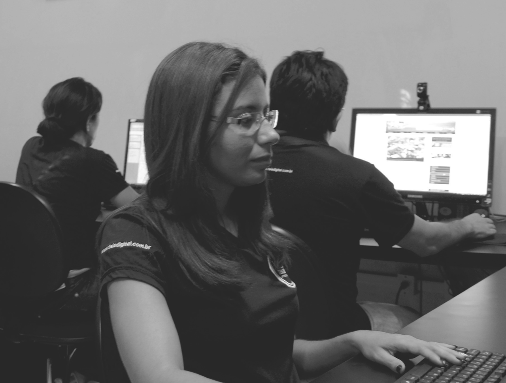
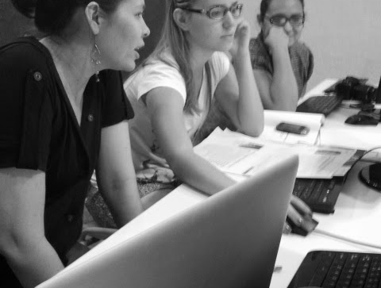
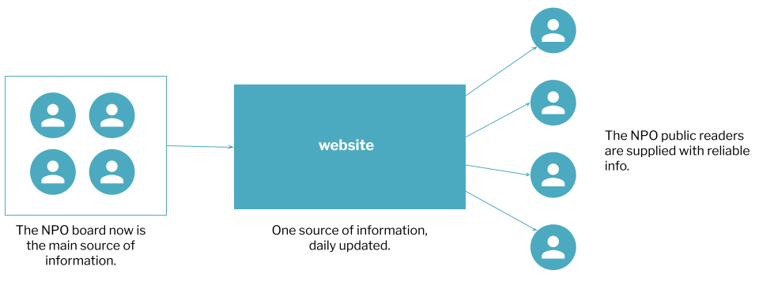
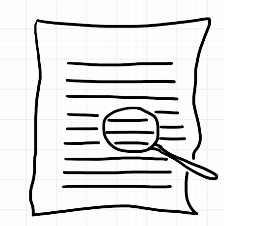
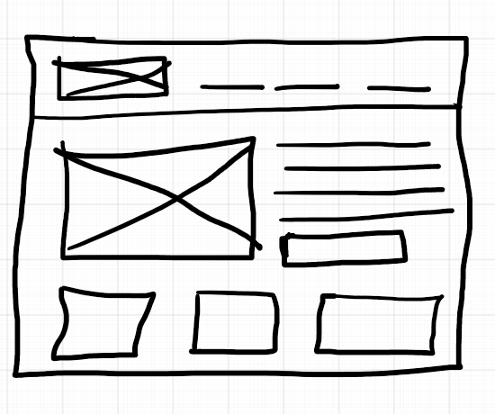
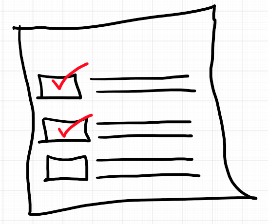
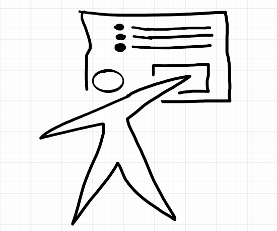
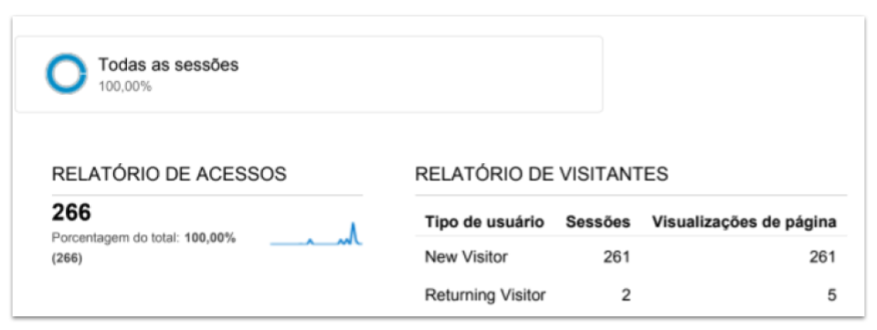

The NPO case
How I worked to create a digital product to help social leaders to communicate with their stakeholders, in 2011.
Context
In 2011, we were approached by a Nonprofit Organization (NPO) based in Fortaleza, Ceará, Brazil. They needed to find a way to communicate their agenda to their stakeholders and also to be considered as the main source of information in their sector, from the mass media.
The communication strategy of an NPO is key to its success. Since their main goal is to help people change their lives for the best, finding the right public and talking in a way they understand is vital.
Challenge
Lead the design team to develop a digital product capable of meeting the institution's communication needs, taking into account the diversity of experiences, culture, and demographics of its members.
Process

What I did
The first step was to create the right team. I set up a group of Designers (User Interface & User Experience), journalists (UX Writing), marketers (Customer Experience), software developers (Back and Front end), and multimedia professionals (sound, photo and video capturing, and editing).

My main responsibilities
- Plan and conduct UX research
- Wireframing, prototyping
- Organize the design critique sessions
- Creating and maintaining HTML/CSS.
The problem
The NPO needed digital solutions to help them communicate their agendas to their stakeholders (members, the press and other NGOs).
Objectives
- Create an institutional website to help their communication team keep the information always fresh.
- Training them to keep the website always updated using a CSM.
- Developing and running a newsletter and building their email list from scratch.
Approach
Create a single source of information that helps the NPO board and its members to stay updated.

Basic 4 steps
This product was developed in 2011 but still ran a basic four steps design process.

1 Research

2 Prototyping

3 Testing

4 Training
1 Research
The project started with some basic research to get the user's needs. We set up an online survey and asked them to fill it out.
Guiding Questions:
- We used closed questions with two open questions to gather opinions
- 105 respondents
- We discovered that people used the Internet to read news, see photos of events and know what other institutions were doing. The majority (88 people) didn't get e-mails from the NPO, but really would like to, once a week.
- With that information, we decided to develop a news-based website, with a photographic cover of their events and build a database to a weekly based newsletter
At the end of this phase, we also worked on the Information Architecture of the website.
2 Prototyping
Ideation phase, using pen and paper.
Choose one idea to build a Low-Fidelity prototype (Fireworks).
Get approval of the structure.
Build a High-Fidelity prototype to test with some users.
3 User testing
- Conduct a basic test of the concept and functions with a small number of users.
- Build the High-Fidelity prototypes.
- Test again and make adjustments.
- Launching the website.
4 Training
- Get the NPO’s team ready to work in the new communication platform.
- Build reports to analyze the metrics for website success.

Impact
- Analytics reports showed a significant increase in the number of visitors.
- Newsletter subscribers increased by 200%.
- Other NPOs came to us asking for the same kind of work.